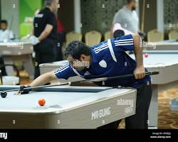

关于台球

斯诺克 (Snooker)
起源于19世纪晚期的英国，是当今世界上最流行的台球项目之一。以其复杂的规则和高超的战术要求而闻名。

花式九球 (9-Ball)
节奏快，观赏性强。比赛双方按照球号从小到大的顺序将球击入袋中，最后击入9号球者获胜。
中式八球 (Chinese 8-Ball)
融合了斯诺克与花式九球的特点，在中国极为普及。使用斯诺克球台的缩小版和美式台球的球。
为什么选择台球？
台球不仅仅是一项运动，它更是一种思维训练。它要求玩家具备几何学的直觉、物理学的理解以及棋手的布局能力。每一次击球都是对力量、角度和旋转的精确计算。
从15世纪的皇室宫廷到现代的职业赛场，台球始终保持着它优雅而神秘的魅力。